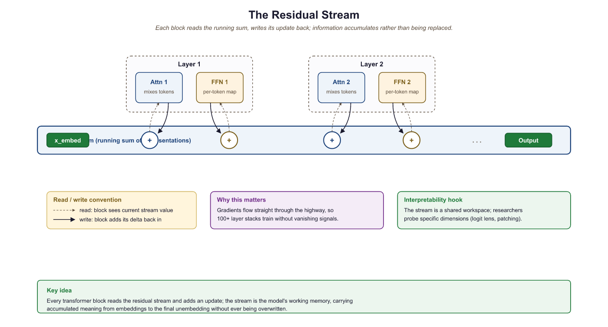

All you need is attention. And layer normalization. And positional encodings. And residual connections. And feed-forward networks. But mostly attention.
Norm, Perpetually Normalizing AI Agent
The Transformer's core insight is that attention alone, applied across all pairs of positions simultaneously, can capture dependencies of arbitrary range without the vanishing gradient problem that plagues RNNs. As we saw in Section 2.3, multi-head self-attention provides the mechanism; this section assembles it into a complete architecture. The cost is quadratic in sequence length, a tradeoff that later sections of this module will address.
Prerequisites
This section continues from Section 3.1. You should be comfortable with the attention mechanism from Section 2.3 and with the PyTorch tensor primitives from Section 0.5.
This continuation of Section 3.1 picks up after the structural elements of a single transformer block. It assembles those parts into a working decoder: how weights are initialized so signal flows cleanly, how the causal mask turns self-attention into autoregressive prediction, what the full forward pass looks like in code, and how to count parameters so you can predict memory before you allocate it.
3.2.1 Weight Initialization
The 2017 paper that introduced the Transformer was titled "Attention Is All You Need" and listed eight authors, each marked as an equal contributor with a footnote describing exactly which piece they built. It is one of the most-cited papers in modern AI and one of the few where the abstract is shorter than the author-contribution footnote, a tradition the field has cheerfully ignored ever since.
Proper initialization is critical for training deep Transformers. The standard approach uses Xavier (Glorot) initialization for most weights: values are drawn from a uniform or normal distribution with variance $2 / (fan_{in} + fan_{out})$. This ensures that the variance of activations stays roughly constant as they propagate forward through layers.
A subtle but important refinement, used in GPT-2 and later models, is to scale the initialization of the output projection in the residual path by $1 / \sqrt{2N}$, where $N$ is the number of layers. The factor of 2 comes from having two residual sub-layers per block (attention and FFN). This keeps the residual stream variance from growing as $O(N)$ through the network.
from torch import nn
# GPT-2 style weight initialization: N(0, 0.02) for most layers,
# scaled by 1/sqrt(2*n_layers) for residual projections to stabilize depth.
def init_weights(module, n_layers):
"""GPT-2 style initialization."""
if isinstance(module, nn.Linear):
nn.init.normal_(module.weight, mean=0.0, std=0.02)
if module.bias is not None:
nn.init.zeros_(module.bias)
elif isinstance(module, nn.Embedding):
nn.init.normal_(module.weight, mean=0.0, std=0.02)
def scale_residual_init(module, n_layers):
"""Scale output projections in residual blocks."""
for name, param in module.named_parameters():
if name.endswith('W_o.weight') or name.endswith('net.3.weight'):
# net.3 is the second linear layer in the FFN
nn.init.normal_(param, mean=0.0, std=0.02 / (2 * n_layers) ** 0.5)
3.2.2 The Causal Mask (Decoder Self-Attention)
In auto-regressive language models (and in the decoder of the original Transformer), each position can
only attend to itself and to earlier positions. This is enforced by a causal mask: an
upper-triangular matrix of -inf values added to the attention scores before the softmax.
The softmax converts -inf to zero, effectively blocking information flow from future tokens.
import torch
# Build a causal (lower-triangular) boolean mask that blocks each token
# from attending to future positions, enforcing autoregressive generation.
def causal_mask(seq_len, device):
"""Returns a boolean mask: True = allowed, False = blocked."""
return torch.tril(torch.ones(seq_len, seq_len, device=device, dtype=torch.bool))
# Usage in attention:
# scores.masked_fill_(~mask, float('-inf'))The mask ensures that the prediction for position $t$ depends only on tokens at positions $0, 1, ..., t$. This is what makes the model auto-regressive: during generation, each new token can be produced by conditioning only on the tokens generated so far.
3.2.2.1 The KV cache: Avoiding Redundant Computation
Consider what happens when a decoder-only model generates text one token at a time. To produce token $t+1$, the model runs a forward pass over the entire sequence $[x_0, x_1, ..., x_t]$. To produce token $t+2$, it must run over $[x_0, x_1, ..., x_t, x_{t+1}]$. Notice that the Key and Value projections for positions $0$ through $t$ are identical in both passes. Recomputing them from scratch at every step is extremely wasteful, turning generation into an O(n²) operation in sequence length when it could be O(n).
The solution is the KV cache: after computing the Key and Value vectors for each position, the model stores them in a cache. When generating the next token, only the new token's Query, Key, and Value need to be computed. The new Key and Value are appended to the cache, and the attention for the new Query is computed against all cached Keys and Values. This reduces each generation step from processing the full sequence to processing a single token (plus the cached context), providing a dramatic speedup in practice.
The tradeoff is memory: the KV cache stores two tensors (K and V) per layer, per attention head, for every token in the sequence. For a model with $L$ layers, $H$ heads, and head dimension $d_h$, the cache for a sequence of length $n$ requires $2 \times L \times H \times d_h \times n$ elements. For large models serving long contexts, this cache can consume tens of gigabytes of GPU memory. Managing KV cache memory efficiently is one of the central challenges of LLM inference, and techniques like grouped-query attention (GQA), paged attention (vLLM), and cache quantization have been developed to address it. We will explore these optimizations in detail in Chapter 9: Inference Optimization.
Without a KV cache, generating a 1,000-token response would require roughly 500,000 redundant Key and Value computations (summing the repeated work across all steps). With a KV cache, each step processes exactly one new token. This is the single most important optimization that makes real-time LLM inference practical, and every production serving framework implements it.
3.2.3 The Complete Forward Pass
Let us trace a single forward pass through a decoder-only Transformer, the architecture used by GPT and most modern LLMs:
- Tokenize the input text into a sequence of integer token IDs.
- Embed the tokens: look up each ID in the embedding table and scale by $\sqrt{d}$.
- Add positional encoding (sinusoidal, learned, or RoPE).
- For each of the $N$ Transformer blocks:
- Apply Layer Normalization (Pre-LN).
- Compute Masked Multi-Head Self-Attention (with the causal mask).
- Add the residual (skip connection).
- Apply Layer Normalization (Pre-LN).
- Apply the Feed-Forward Network.
- Add the residual.
- Apply a final Layer Normalization.
- Project to vocabulary size with a linear layer (often weight-tied with the embedding matrix).
- Apply softmax to obtain next-token probabilities.
Many models share ("tie") the embedding matrix and the final output projection matrix. Since both map between $d$-dimensional space and vocabulary space, sharing weights reduces parameter count significantly (by $V \times d$ parameters) and provides a useful inductive bias: similar tokens should have similar embeddings and similar output logits.
Algorithm: Decoder-Only Transformer (next-token logits)
Input: token IDs t in {0,..,V-1}^{B x T}
Output: logits L in R^{B x T x V}
// 1. Embed + add positional information
x := Embed[t] * sqrt(d_model) // (B, T, d_model)
x := x + PositionalEncoding(T) // sinusoidal, learned, or RoPE-applied later
// 2. Build causal mask
M[i, j] := 0 if j <= i else -inf // (T, T)
// 3. Stack of N Pre-LN blocks
For l = 1..N:
h := LayerNorm(x) // pre-attention norm
a := MultiHeadAttention(h, mask = M) // Algorithm 3.2.1, applied per head
x := x + a // residual
h := LayerNorm(x) // pre-FFN norm
f := FFN(h) // two-layer MLP, often SwiGLU
x := x + f // residual
// 4. Final norm + unembedding
x := LayerNorm(x)
L := x @ E^T // weight-tied with embedding E, shape (B, T, V)
Return LThis is the modern Pre-LN recipe used by GPT-3 onward; placing the LayerNorm before each sub-layer (rather than on the residual path, as in the original 2017 Post-LN design) is what makes deep stacks trainable without warmup tricks (Xiong et al., "On Layer Normalization in the Transformer Architecture," ICML 2020, arXiv:2002.04745).
3.2.4 Information Flow Through the Residual Stream
A powerful mental model for understanding Transformers (popularized by Elhage et al. at Anthropic) is the residual stream perspective. Instead of viewing the Transformer as a sequence of layers, imagine a single stream of vectors (one per position) flowing from the input embedding to the output. Each attention layer and each FFN layer reads from and writes to this stream additively:
Each sub-layer sees the accumulated state of the residual stream up to that point, performs some computation, and adds its contribution back. This means that earlier layers can communicate with later layers directly through the residual stream, without the information needing to "pass through" every intermediate layer. It also means that deleting a layer from a trained Transformer may be less catastrophic than you might expect; the residual stream carries forward most of the information regardless.

This perspective is central to the field of mechanistic interpretability, where researchers decompose the behavior of trained Transformers into the contributions of individual heads and MLP layers. We will return to this in a later module.
3.2.5 Putting It All Together: Parameter Counts
For a Transformer with $N$ layers, model dimension $d$, feed-forward dimension $d_{ff} = 4d$, $h$ attention heads, and vocabulary size $V$, the parameter count is approximately:
| Component | Parameters per Layer | Notes |
|---|---|---|
| Attention (Q, K, V, O) | 4d2 | Four weight matrices, each d × d |
| FFN (two linears) | 8d2 | d × 4d + 4d × d |
| LayerNorms (2 per block) | 4d | Scale and shift, each d |
| Per-layer total | ≈ 12d2 | Dominated by FFN + Attention |
| Embedding + Output | V × d | Halved with weight tying |
| Total (no tying) | 12Nd2 + 2Vd |
For GPT-3 (N=96, d=12288, V=50257), this gives roughly 175 billion parameters. The FFN contributes about twice as many parameters as the attention layers, a ratio that remains consistent across model sizes.
Understanding the parameter count formula (12Nd2 + 2Vd) is directly useful when planning model deployment. Suppose a team needs a model that fits in 16 GB of GPU memory at FP16 precision (2 bytes per parameter). That gives a budget of 8 billion parameters. Using the formula with a typical vocabulary of 50,000 tokens, they can solve for feasible combinations: N=32 layers with d=4096 yields roughly 6.4B parameters (fits), while N=40 with d=5120 yields roughly 12.6B (does not fit). This kind of back-of-the-envelope calculation lets engineers choose model dimensions that hit performance targets without exceeding hardware constraints, long before running any training jobs.
Before launching a training run, print your model's parameter count with sum(p.numel() for p in model.parameters()). This sanity check catches architecture bugs (wrong hidden sizes, missing layers) before you waste GPU time.
Residual connections (He et al., 2016) are not just an engineering trick; they fundamentally reshape the loss landscape. Without residuals, deep networks have loss surfaces riddled with saddle points and sharp minima. Adding skip connections creates a smooth "highway" through parameter space: the network can always learn the identity function (do nothing) and then incrementally refine it. This insight from optimization geometry explains why Transformers can be trained with 100+ layers while plain deep networks struggle past 20. It also connects to a deeper principle: the Transformer's residual stream functions as an evolving "blackboard" where each attention layer and FFN layer reads, processes, and writes back information. This view, explored further in the mechanistic interpretability work of Section 10.1, treats the residual stream as the central communication channel of the network.
Post-Transformer architectures are an active area of exploration. State-space models like Mamba (Gu and Dao, 2023) achieve linear-time sequence processing by replacing attention with selective state spaces. Hybrid architectures (Jamba, StripedHyena) combine state-space layers with attention layers to get the best of both worlds. Meanwhile, modifications to the standard Transformer continue: RoPE (Rotary Position Embedding) has largely replaced sinusoidal positional encoding, Pre-LayerNorm is now standard over Post-LayerNorm, and SwiGLU has replaced ReLU in feedforward blocks. See Section 3.5 for a systematic comparison of these variants.
- The Transformer processes all positions in parallel using self-attention plus feed-forward networks, avoiding the sequential bottleneck of RNNs.
- Positional encoding injects ordering information that attention alone cannot capture.
- Multi-head attention lets the model attend to multiple aspects of context simultaneously.
- The FFN provides the essential nonlinear per-token transformation; it holds roughly 2/3 of each layer's parameters.
- Residual connections create gradient highways and enable an "ensemble" of paths through the network.
- Pre-LN ordering is preferred in modern models for training stability.
- Careful initialization (Xavier + residual path scaling) prevents variance explosion in deep models.
- The residual stream perspective views each sub-layer as reading from and writing to a shared communication channel.
Show Answer
Show Answer
Show Answer
Show Answer
Show Answer
Show Answer
Exercises
GPT-2 Small has N=12 layers, d=768, vocab V=50257, and uses weight tying (input and output embedding share parameters). (a) Compute the parameters in the Transformer blocks alone. (b) Add the embedding (with weight tying). (c) The reported total is ~124M; how close is your estimate, and what accounts for any gap?
Answer Sketch
(a) Per-layer is ~12d² = 12 × 768² = 7,077,888 params; times 12 layers = 84,934,656 (~85M). (b) Embedding: V × d = 50257 × 768 = 38,597,376 (~38.6M); with weight tying, the output projection reuses these parameters, so we count once. Subtotal: ~85M + ~39M = ~124M. (c) Excellent agreement. The remaining gap (less than 1M) comes from positional embeddings (1024 × 768 = ~0.79M for max context 1024), LayerNorm scale/shift parameters (~37K total), and final LayerNorm. The 12d² rule of thumb is accurate to within 1% for typical configurations and is the right tool for back-of-the-envelope sizing.
Suppose you remove positional encoding entirely from a Transformer (set it to zero). For the input "the cat sat" vs. "sat cat the", predict whether (a) the per-position output vectors will be identical, (b) the bag of output vectors will be identical, and (c) the next-token prediction will be the same. Justify each answer in one sentence.
Answer Sketch
(a) No: position 0's output for "the cat sat" comes from input "the", but for "sat cat the" comes from input "sat", so the per-position outputs differ. (b) Yes: self-attention without positional encoding is permutation-equivariant, meaning the set (multiset) of output vectors is the same regardless of input order; permuting the input simply permutes the outputs. (c) Yes (in expectation): if the next-token prediction reads from a specific output position (say the last), and the multiset of representations going into that position is the same, the predicted distribution will be identical for both inputs, which is a disastrous failure for language modeling. This exercise directly motivates why positional encoding is non-optional.
Trace the residual stream values through a 4-layer model where each sub-layer's output has standard deviation 1.0 at initialization. (a) For Post-LN (LN after the residual add), what is the residual-stream std after layer 4? (b) For Pre-LN (LN before each sub-layer), what does the LN see at layer 4 input? (c) Use this to explain why Pre-LN is more stable.
Answer Sketch
(a) Post-LN: each layer outputs $LN(x + sub(x))$, which always has std = 1 by construction; the residual stream is renormalized after every block, so std stays at 1 after every layer. The danger is that the gradient through the LN can shrink because the normalization decouples scale information across layers. (b) Pre-LN: the residual stream accumulates without renormalization. Each block adds something with std ~ 1 to the stream, so after 4 layers std ~ $\sqrt{1 + 4} \approx 2.24$. The LN inside each block sees inputs with growing std but normalizes them before the sub-layer, so the sub-layer always operates in unit-variance regime. (c) Pre-LN is more stable because the residual stream's growth is benign (the sum of independent contributions), while gradients flow back through the residual path without being affected by LN. Post-LN must learn to "balance" the residual through the LN, which often requires careful warmup of the learning rate.
Using $d = 512$, what is the wavelength (in token positions) of (a) the lowest-frequency dimension and (b) the highest-frequency dimension of the standard sinusoidal positional encoding? (c) For a sequence of length 4000, will a model trained on length 512 generalize positionally? Explain in terms of which dimensions can or cannot extrapolate.
Answer Sketch
The frequency formula is $1/10000^{2i/d}$, so wavelength is $2\pi \cdot 10000^{2i/d}$. (a) Highest $i$ is 255 (since dims are paired sin/cos), giving wavelength $2\pi \cdot 10000^{510/512} \approx 2\pi \cdot 9655 \approx 60{,}600$ positions. (b) Lowest $i = 0$: wavelength $2\pi \cdot 1 \approx 6.28$. (c) Partial extrapolation: high-frequency dimensions (which oscillate every ~6 to ~100 positions) saw the same patterns at training; they should generalize. But the model never saw the slow-varying dimensions in their later phases (positions 512-4000), so the longer-period encodings represent unseen positional fingerprints. In practice, sinusoidal encodings extrapolate "okay-but-not-great" beyond training length; this is one motivation for RoPE and ALiBi (covered in Section 3.5).
Modify the MultiHeadAttention in Code Fragment 3.2.3 to support an additive position-dependent bias to attention scores (this is essentially how ALiBi works). The bias should be a tensor of shape (n_heads, max_seq, max_seq) registered as a buffer. Sketch the necessary changes in 5-6 lines.
Answer Sketch
In __init__: add self.register_buffer('alibi_bias', torch.zeros(n_heads, max_seq, max_seq)). In forward, after computing scores: T_q = q.size(2); T_k = k.size(2); scores = scores + self.alibi_bias[:, :T_q, :T_k].unsqueeze(0). The unsqueeze adds the batch dimension to broadcast across all batch elements. The bias is added before softmax so that it shapes the attention distribution; it is added after the $\sqrt{d_{k}}$ scaling because ALiBi's bias values are calibrated to interact with the un-normalized output of the softmax, not the unscaled scores. For a true ALiBi implementation, the bias matrix would be initialized as a linear penalty on (i-j) with per-head slopes following ALiBi's geometric schedule rather than zeros.
Per the chapter table, the FFN contributes 8d² parameters per layer while attention contributes 4d². (a) Verify the 8d² figure by writing out the dimensions of the two FFN matrices (assume $d_{ff} = 4d$). (b) If a researcher proposes shrinking $d_{ff}$ from 4d to 2d to halve the FFN parameter count, what tradeoff are they making? (c) Empirically, modern models (Llama-3, GPT-4-class) keep $d_{ff} \approx 4d$ or use $d_{ff} \approx 8d/3$ with SwiGLU. Why has the community converged on these specific ratios?
Answer Sketch
(a) FFN has W1 of shape (d, 4d) = 4d² params and W2 of shape (4d, d) = 4d², total 8d². (b) Halving $d_{ff}$ reduces nonlinear capacity: the FFN is the only place where each token undergoes a nonlinear position-wise transformation, so it stores most of the model's "knowledge" (key-value memories, as Geva et al. 2021 showed). Halving it consistently degrades downstream task accuracy by 1-3% at constant total parameters; you would do better adding more layers. (c) The 4x ratio is empirical: ablations in the original Transformer paper and follow-ups (Kaplan et al. 2020) showed it sits near the Pareto frontier of compute vs. quality. SwiGLU's 8/3 ratio compensates for SwiGLU's three matrices (instead of two) so the parameter count matches GLU at 4d. Convergence on these ratios reflects extensive empirical study, not first-principles derivation.
What's Next?
In the next section, Section 3.3: Encoder, Decoder, and Encoder-Decoder Architectures, we generalize from the single decoder block built here to the three architectural families (encoder-only, decoder-only, encoder-decoder) and what each is good at.